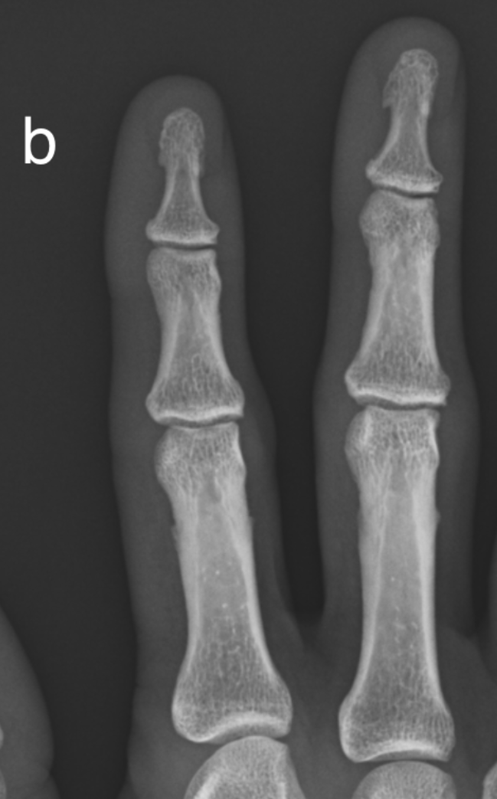

Subperiosteal resorption
- Osteoclastic activity is increased in response to increased PTH levels.
- Subperiosteal resorption refers to osteoclastic bone resorption on the periosteal surface
- This is a specific finding in hyperparathyroidism.
- Classically affects the radial aspect of the proximal and middle phalanges of the 2nd and 3rd digits.
- Check radiograph for acro-osteolysis (tuft resorption), Brown tumors and chondrocalcinosis which may also be present in hyperparathyroidism.
Example Radiograph

a) Subperiosteal resorption along the radial aspects of the 2nd and 3rd digits (Hyperparathyroidism). Note also marginal erosion at the third DIPJ.

b) Normal radiograph for comparison